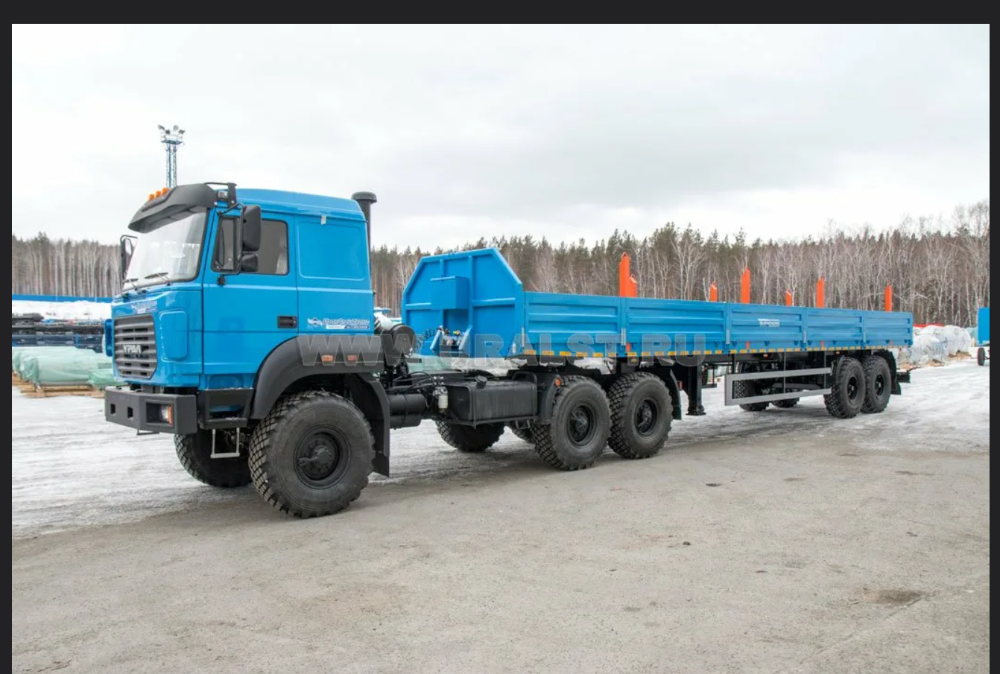
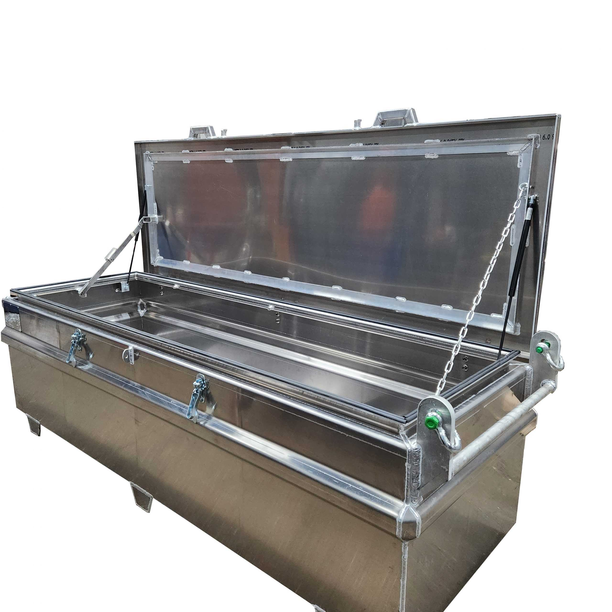
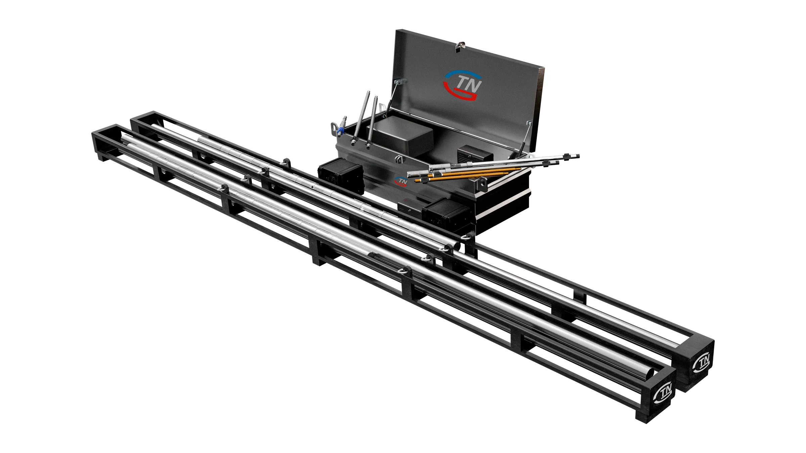

От собственного оборудования — к ИИ-управлению бурением
Структура ролика (05:00): первые 2 минуты раскрывают компанию «ГеоТехНавигация», производственную базу и работу оборудования в скважине; следующие 3 минуты показывают программный комплекс Drill Monitor, масштабирование через Единый Контрольный Центр с каталогизацией данных на сервере, работу локального настроенного ИИ (предупреждения и предиктивный анализ проблем на базе реальной статистики) и целевую модель — полное управление бурением и построением скважины через ИИ под контролем опытного DD-инженера.
В каждой карточке ниже можно править текст диктора и оставлять заметки — все сохранения сразу попадают в общую базу.
14 календарных дней на полное производство всех 14 сцен и мастер-сборку
Под каждую сцену закреплён конкретный срок создания видеоклипа. Производство идёт последовательно: от 3D-сцен оборудования и забойной телеметрии к экранам Drill Monitor, серверной архитектуре, модулям локального ИИ и финальному озвучиванию.
Посценный график создания видеоклипов (Дни 1–14)
| Сцена и хронометраж | Блок сценария | Технология производства | Срок создания клипа |
|---|---|---|---|
| Итого: полное производство 14 видеоклипов (05:00), дикторская озвучка, саунд-дизайн и финальный мастер | 14 дней (День 1 – День 14) | ||
Референсы транспорта и упаковки · предоставлены заказчиком
Для сцен подготовки, логистики и сервисного возврата. Геометрию крупного плана сверяем с этими изображениями.


